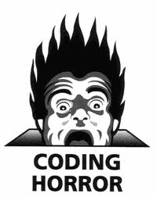

What is the single most influential book every programmer should read?
Los primeros 6 libros son:
Code Complete (2nd edition)by Steve McConnellThe Pragmatic ProgrammerStructure and Interpretation of Computer ProgramsThe C Programming Languageby Kernighan and RitchieIntroduction to Algorithmsby Cormen, Leiserson, Rivest & SteinDesign Patternsby the Gang of Four- ...
Outline
De qué vamos a hablar
- 1. Como escribir funciones/procedimientos de alta calidad:
- Cómo es una rutina horrible
- Cómo decidir cuando crear una rutina
- Cómo elegir un nombre adecuado
- Guidelines para los parámetros de una rutina
- 2. Variables
- Donde y como definirlas
- Variables temporales
- Cómo nombrar las variables
- Consejos para tipos particulares de variables
- Otros consejos utiles
Low-quality routine
Un ejemplo de código horrible
void HandleStuff( CORP_DATA & inputRec, int crntQtr, EMP_DATA empRec,
double & estimRevenue, double ytdRevenue, int screenX, int screenY,
COLOR_TYPE & newColor, COLOR_TYPE & prevColor, StatusType & status,
int expenseType )
{
int i;
for ( i = 0; i < 100; i++ ) {
inputRec.revenue[i] = 0;
inputRec.expense[i] = corpExpense[ crntQtr ][ i ];
}
UpdateCorpDatabase( empRec );
estimRevenue = ytdRevenue * 4.0 / (double) crntQtr;
newColor = prevColor;
status = SUCCESS;
if ( expenseType == 1 ) {
for ( i = 0; i < 12; i++ )
profit[i] = revenue[i] - expense.type1[i];
}
else if ( expenseType == 2 ) {
profit[i] = revenue[i] - expense.type2[i];
}
else if ( expenseType == 3 )
profit[i] = revenue[i] - expense.type3[i];
}
Low-quality routine
Nombre y parámetros
void HandleStuff( CORP_DATA & inputRec, int crntQtr, EMP_DATA empRec,
double & estimRevenue, double ytdRevenue, int screenX, int screenY,
COLOR_TYPE & newColor, COLOR_TYPE & prevColor, StatusType & status,
int expenseType )
{
// ...
}
- El nombre no describe qué hace la rutina.
- Tiene demasiados parámetros.
- Los parámetros no están ordenados de una manera lógica.
- Hay parámetros que no se usan
Low-quality routine
No tiene un propósito definido
void HandleStuff( CORP_DATA & inputRec, int crntQtr, EMP_DATA empRec,
double & estimRevenue, double ytdRevenue, int screenX, int screenY,
COLOR_TYPE & newColor, COLOR_TYPE & prevColor, StatusType & status,
int expenseType )
{
int i;
for ( i = 0; i < 100; i++ ) {
inputRec.revenue[i] = 0;
inputRec.expense[i] = corpExpense[ crntQtr ][ i ];
}
UpdateCorpDatabase( empRec );
estimRevenue = ytdRevenue * 4.0 / (double) crntQtr;
newColor = prevColor;
status = SUCCESS;
if ( expenseType == 1 ) {
for ( i = 0; i < 12; i++ )
profit[i] = revenue[i] - expense.type1[i];
}
else if ( expenseType == 2 ) {
profit[i] = revenue[i] - expense.type2[i];
}
else if ( expenseType == 3 )
profit[i] = revenue[i] - expense.type3[i];
}
Low-quality routine
Escribe y usa variables globales
void HandleStuff( CORP_DATA & inputRec, int crntQtr, EMP_DATA empRec,
double & estimRevenue, double ytdRevenue, int screenX, int screenY,
COLOR_TYPE & newColor, COLOR_TYPE & prevColor, StatusType & status,
int expenseType )
{
int i;
for ( i = 0; i < 100; i++ ) {
inputRec.revenue[i] = 0;
inputRec.expense[i] = corpExpense[ crntQtr ][ i ];
}
UpdateCorpDatabase( empRec );
estimRevenue = ytdRevenue * 4.0 / (double) crntQtr;
newColor = prevColor;
status = SUCCESS;
if ( expenseType == 1 ) {
for ( i = 0; i < 12; i++ )
profit[i] = revenue[i] - expense.type1[i];
}
else if ( expenseType == 2 ) {
profit[i] = revenue[i] - expense.type2[i];
}
else if ( expenseType == 3 )
profit[i] = revenue[i] - expense.type3[i];
}
Low-quality routine
Para peor...
Ademas de todas las razones anteriores:
- No tiene ningun tipo de documentacion (comentarios / parámetros)
- No tiene un estructura que nos diga qué hace cada cosa
- Llena de números mágicos (100, 4.0, 12, 2, y 3).
- Modifica una variables que se llama inputRec!
- No se defiende de parámetros incorrectos (division por 0)
Aside from the computer itself, the routine is the single greatest invention in computer science. The routine makes programs easier to read and easier to understand.
Razones válidas para crear una rutina
Una lista breve
Algunas de las razones más importantes/comunes para armar una rutina:
Reducir la complejidad.Permite no tener que recordar los detalles de como funciona.- Introducir una abstracción intermedia/entendible
- Evitar código duplicado
- Esconder secuencias
- Mejorar la portabilidad
- Simplificar lógica booleana complicada / reglas de negocios
- Mejorar el rendimiento
Razones válidas para crear una rutina:
Introducir una abstracción intermedia
if ( node <> NULL ) then
while ( node.next <> NULL ) do
node = node.next
leafName = node.name
end while
else
leafName = ""
end if
podría reemplazarse por:
leafName = GetLeafName( node )
Razones válidas para crear una rutina:
Operaciones demasiado simples
points = deviceUnits * ( POINTS_PER_INCH / DeviceUnitsPerInch() )
podría reemplazarse por:
points = DeviceUnitsToPoints( deviceUnits )
Razones válidas para crear una rutina:
Operaciones demasiado simples
Function DeviceUnitsToPoints( deviceUnits: Integer ) Integer;
if ( DeviceUnitsPerInch() <> 0 )
DeviceUnitsToPoints = deviceUnits *
( POINTS_PER_INCH / DeviceUnitsPerInch() )
else
DeviceUnitsToPoints = 0
end if
End Function
Cómo ponerle nombre a nuestras rutinas
Describir todo lo que hace
- Describir toda la salida y efectos secundarios
- Ejemplo: si una rutina calcula los totales de un reporte y abre un archivo:
ComputeReportTotalsAndOpenOutputFile()
y no solo
ComputeReportTotals(). - Si los nombres resultantes son horribles => el problema es la rutina
- La solución es re-pensar y/o separar la rutina
Cómo ponerle nombre a nuestras rutinas
Evitar nombres que son genéricos o poco específicos
- Un nombre débil es el síntoma de una rutina con propósito poco claro.
- Evitar nombres como
HandleCalculation()
PerformServices()
OutputUser()
ProcessInput() - Hay veces que el único problema es la elección del nombre:
HandleOutput()
no es bueno pero
FormatAndPrintOutput()
está perfecto: describe bien lo que hace la rutina.
Cómo ponerle nombre a nuestras rutinas
Para los procedimientos: usar un verbo seguido por un sujeto
- Buenos ejemplos:
PrintDocument()
CalcMonthlyRevenues()
CheckOrderlnfo()
RepaginateDocument() - En lenguajes orientados a objetos utilizar verbos ya que el objeto normalmente aparece:
document.print()
orderInfo.check()
monthlyRevenues.calc()
-
document.printDocument()es redunante
Cómo ponerle nombre a nuestras rutinas
Usar los opuestos correctamente
- Utilizar bien los opuestos ayuda a la consistencia
- La consistencia ayuda a la legibilidad
- Opuestos como first/last son claros
- Funciones como:
FileOpen()
y
_lclose()
son asimétricos y generan confusión
Cómo ponerle nombre a nuestras rutinas
Usar los opuestos correctamente
Lista de opuestos:
| add / remove | increment / decrement | open/close |
| begin / end | insert / delete | show/hide |
| create / destroy | lock / unlock | source/target |
| first / last | min / max | start/stop |
| get / put | next / previous | up/down |
| get / set | old / new |
Rutinas de alta calidad
Largo óptimo de una rutina
- El libro presenta varios estudios que estudiaron correlaciones entre largo y métricas de calidad
- En la mayoría se obtienen mejores métricas con rutinas cortas
- El óptimo es 50-150 lineas
- nunca deberían exeder las 200 lineas
Rutinas de alta calidad
Recomendaciones para los parámetros de las rutinas
- Poner los parámetros en órden: entrada, entrada-salida y sólo salida
- Si hay varias rutinas con los mismos parámetros: usar el mismo orden
- No usar más de 7 parámetros
- Utilizar todos los parámetros
- Documentar los supuestos que asumimos de los parámetros
- Mejor aún: utilizar asserts()
- Qué cosas documentar?
- Tipo de parámetros
- Unidades (metros, pulgadas, segundos, etc)
- Rangos esperados
- Valores que no deberían aparecer
Variables
Recomendaciones
- Declarar todas las variables
- Usar convenciones para prefijos/sufijos (i.e. NoCards o NumCards)
- Si hay utilizar herramientas para detectar violaciones a las convenciones
- Initicializar cada variable lo más cerca posible del primer uso.
Variables
Inicializar lo más cerca del 1er uso

// initialize all variables
var accountIndex = 0
var total = 0.0
var done = false
// ...
// code using accountIndex
// ..
// code using total
// ...
// code using done
while( ! done ) {
}
Variables
Inicializar lo más cerca del 1er uso
var accountIndex = 0
// code using accountIndex
// ..
var total = 0.0
// code using total
// ...
var done = false
// code using done
while( ! done ) {
}
- En el 1er caso done el código anterior lo pudo modificar accidentalmente
- Juntar las inicializaciones da la impresión de que todas las variables se usan en todo el código.
- Si después se agregan loops alrededor del loop de done se pueden olvidar de re-inicializarla
Slide with Bullets
- Titles are formatted as Open Sans with bold applied and font size is set at 45
- Title capitalization is title case
- Subtitle capitalization is title case
- Subtitle capitalization is title case
- Titles and subtitles should never have a period at the end
Slide with Bullets that Build
Subtitle Placeholder
A list where items build:
- Pressing 'h' highlights code snippets
- Pressing 'p' toggles speaker notes (if they're on the current slide)
- Pressing 'f' toggles fullscreen viewing
- Pressing 'w' toggles widescreen
- Pressing 'o' toggles overview mode
- Pressing 'ESC' toggles off these goodies
Another list, but items fade as they build:
- Hover over me!
- Hover over me!
- Hover over me!
Slide with (Smaller Font)
- All links open in new tabs.
- To change that this, add
target="_self"to the link.
Code Slide (with Subtitle Placeholder)
Subtitle Placeholder
Press 'h' to highlight important sections of code (wrapped in <b>).
<script type='text/javascript'>
// Say hello world until the user starts questioning
// the meaningfulness of their existence.
function helloWorld(world) {
for (var i = 42; --i >= 0;) {
alert('Hello ' + String(world));
}
}
</script>
Code Slide (Smaller Font)
// Say hello world until the user starts questioning
// the meaningfulness of their existence.
function helloWorld(world) {
for (var i = 42; --i >= 0;) {
alert('Hello ' + String(world));
}
}
<style>
p { color: pink }
b { color: blue }
</style>
<!DOCTYPE html> <html> <head> <title>My Awesome Page</title> </head> <body> <p>Hello world</p> <body> </html>
Slide with Speaker Notes
Press 'p' to toggle speaker notes.
Presenter Mode
Add ?presentme=true to the URL to enabled presenter mode.
This setting is sticky, meaning refreshing the page will persist presenter
mode.
Hit ?presentme=false to disable presenter mode.
Slide with Image

Slide with Image (Centered horz/vert)

Table Option A
Subtitle Placeholder
| Column 1 | Column 2 | Column 3 | Column 4 | |
|---|---|---|---|---|
| Row 1 | placeholder | placeholder | placeholder | placeholder |
| Row 2 | placeholder | placeholder | placeholder | placeholder |
| Row 3 | placeholder | placeholder | placeholder | placeholder |
| Row 4 | placeholder | placeholder | placeholder | placeholder |
| Row 5 | placeholder | placeholder | placeholder | placeholder |
Table Option A (Smaller Text)
Subtitle Placeholder
| Column 1 | Column 2 | Column 3 | Column 4 | |
|---|---|---|---|---|
| Row 1 | placeholder | placeholder | placeholder | placeholder |
| Row 2 | placeholder | placeholder | placeholder | placeholder |
| Row 3 | placeholder | placeholder | placeholder | placeholder |
| Row 4 | placeholder | placeholder | placeholder | placeholder |
| Row 5 | placeholder | placeholder | placeholder | placeholder |
Table Option B
Subtitle Placeholder
| Header 1 | placeholder | placeholder | placeholder |
|---|---|---|---|
| Header 2 | placeholder | placeholder | placeholder |
| Header 3 | placeholder | placeholder | placeholder |
| Header 4 | placeholder | placeholder | placeholder |
| Header 5 | placeholder | placeholder | placeholder |
Slide Styles
- class="red"
- class="red2"
- class="red3"
- class="blue"
- class="blue2"
- class="blue3"
- class="green"
- class="green2"
- class="green3"
- class="yellow"
- class="yellow2"
- class="yellow3"
- class="gray"
- class="gray2"
- class="gray3"
- class="gray4"
I am centered text with a and button.
Segue Slide
Subtitle Placeholder
Full Image (with Optional Header)
This is an example of quote text.
Slide with Iframe
<Muchas Gracias!>
Mis datos de contacto para los que le interese.